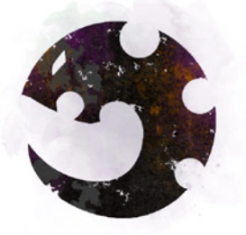

Genestealer Cults
| Genestealer Cults Broodcovens; the Hidden Dynasties | |
|---|---|
The wyrm-form, sigil of the Genestealer Cults, as catalogued by the Ordo Xenos | |
| Classification | Xenos; Tyranid vanguard; heretical secret society (Ordo Xenos and Ordo Hereticus joint file) |
| Source | The genestealer, a Tyranid vanguard organism; the Hive Mind |
| Leader | A Patriarch, supported by a Magus, a Primus and an Iconward |
| Membership | Hybrids of the first to fourth generation; human-born Acolytes and Neophytes; the Purestrain |
| First classified by the Imperium | 680.M41, Ghosar Quintus (Cult of the Four-armed Emperor) |
| Goal | Prepare a world for the hive fleet; the "Day of Ascension" |
| Major cults on Imperial record | |
| Cult of the Four-armed Emperor; the Brotherhood; the Twisted Helix; the Rusted Claw; the Pauper Princes; the Hivecult; the Bladed Cog; the Starchosen | |
| Principal uprisings | |
| Ghosar Quintus (680.M41); Ichar IV (992.M41); the Segmentum Solar uprisings (997.M41); Cornucopia and Terra (999.M41) | |
The Genestealer Cults are secret societies of humans and their hybrid offspring, seeded on Imperial worlds by Tyranid genestealers in advance of a hive fleet. A genestealer that reaches a settled world infects its human hosts with a genetic taint, the Genestealer Curse, so that their children and their children's children are born progressively closer to the Tyranid form. The hybrids come together as cults of the Four-armed Emperor, a false deity formed from the image of the Patriarch, and prepare a rising which will weaken the world's defences at the moment the swarm arrives from the void. They are the oldest weapon of the Tyranids, and the most insidious.[1][2]
The Imperium first formally classified a Genestealer Cult in 680.M41, but the Ordo Xenos believes that cults existed long before this. Hidden infestations have been found in the oldest hives and mining colonies, and the Inquisition holds that many early rebellions and heresies were the work of genestealers. The cults have no interest in the Imperium except as host: they do not seek to rule it, and the cult's leaders, the Patriarchs, are bound to the Hive Mind. The Imperium treats them as a heresy of the first order, to be extirpated wherever they are found.[3]
In the Era Indomitus the cults have grown more numerous than at any time on record. The coming of Hive Fleet Leviathan was marked by a wave of uprisings across the Segmentum Solar, and hundreds of cults revealed themselves within a single Terran month. They are now regarded as the greatest internal threat to the Imperium after the Chaos cults.[4]
The Genestealer Curse
[edit]The genestealer is a small and fast Tyranid, about the size of a man, with four arms and claws that can cut through armour. It is a creature of stealth, and its purpose in the Tyranid design is not to fight but to infect. A genestealer that overcomes a victim does not kill but implants an embryo, which passes unnoticed through the victim's body. A child of such a victim is born a hybrid, with some Tyranid features and the full psychic bond with its genestealer progenitor. With each generation the Tyranid traits become stronger. The hybrids of the first generation are largely human, the second show deformities, the third are mostly Tyranid in form and the fourth are almost purely Tyranid in form, though they can still pass as human in poor light.[1]
The effect of this on the human host is to give the cult a bond. The hybrids and those infected feel a psychic link to the Patriarch, a bond in which a form of love is felt. The cult members accept him and the Hive Mind as a divine authority, without understanding that they are being used. Imperial inquisitors have discovered that cults can arise from a single genestealer and that the cult leader is often unaware of his subservience to the Tyranids until the hive fleet appears. The Hive Mind has no further use for a cult after the Day of Ascension, and the cults, as the Imperium has found, are usually destroyed together with their worlds.[1][3]
The structure of a cult
[edit]
A cult begins with a genestealer, known as the Patriarch once it matures, and a small group of infected humans. The Patriarch is a large and powerful genestealer that grows in strength with the size of the cult. Beneath him are the Magus, a psychic hybrid who acts as the voice of the Patriarch to the cultists, and the Primus, a hybrid who leads the cult in the field. The Acolytes are the first and second generation hybrids, the Neophytes the third and fourth. The cult takes its recruits from the lowest classes of the population: the poor, the sick and the oppressed, who are offered shelter and meaning. Its members are drawn from every part of society, and have been found among Imperial nobles, Guardsmen and Mechanicus adepts.[1]
The cult is organised in cells, and every cell is led by its own Magus. Only the Patriarch knows the whole network. This makes the cult difficult to detect, and the Inquisition has found that an infestation can run for generations before it comes to light. A cult's culture is shaped by its host world: a hive cult is secret and urban, a death world cult is militant and feral, and an agri-world cult is rooted in the peasantry. The cult's hybrids use the materials of their world and have developed vehicles and weapons from mining machinery, among them the Goliath truck, the Tectonic Fragdrill and the Achilles Ridgerunner. They lay in stores of weapons and explosives, with the help of the Tyranids' own mineral knowledge, over many years.[1][5]
Cult doctrine
[edit]The Genestealer Cults are held together by a creed that borrows from the Imperial faith. Most worship a Four-armed Emperor, who is said to descend from the stars to lead the faithful. The cult's doctrine is that a day of ascension will come, when the Star Children will arrive and the oppressed will be taken to a better life. Its priests use the Imperial Cult's own words and symbols, and the cult's clergy have often been mistaken for Imperial preachers. The cults also have secret symbols of their own: the five principal cults of the Imperial record, the Twisted Helix, the Rusted Claw, the Pauper Princes, the Hivecult and the Bladed Cog, are marked by their own glyphs.[3][5]
Military and tactics
[edit]A cult's army is built in secret over years, and it is armed with stolen and improvised equipment. Its foot soldiers, the Neophyte Hybrids, carry mining lasers, demolition charges and autoguns, and the Acolyte Hybrids lead them in close combat with rending claws and cult picks. Its vehicles are adapted from civilian machinery: Goliath trucks, Cult Chimeras and Sentinels stolen from the planetary defence force, and the burrowing Tectonic Fragdrill. The cult's greatest weapon is surprise. On the day of the rising, the Magus and the Patriarch may use their psychic gifts to control the minds of the defenders, while the cult's sleepers, who may include officers of the garrison, seize the command posts and the vox-relays from within. The Imperium's commanders have noted that the cults fight with a coordination that suggests a single mind, which is exactly what they have.[1][5]
History
[edit]Early cults
[edit]The Imperium's early records contain many references to cults, which were usually dismissed as heretical rebellions. The Ordo Xenos has since shown that a number of them were genestealer cults, but the evidence is sealed. The genestealers are known to travel aboard space hulks and in the spore-pods of the hive fleets, and the Imperium has found them in derelict ships and in the drifting wrecks of the Warp. A space hulk that reaches a world may seed it with genestealers. It was in this way that the cult of the Four-armed Emperor, one of the first to be recognised, was formed.[1]
Ghosar Quintus
[edit]The first confirmed Imperial engagement with a Genestealer Cult was on the mining colony of Ghosar Quintus in 680.M41. The Inquisitor Chaegryn of the Ordo Xenos, who was investigating a perverted version of the Imperial Creed among the miners, went into the depths of the Great Pit with a force of Tempestus Scions. The deeper he went, the more of the cult he found, and he sent back a number of anomalous reports before reporting that all was well. His last message was followed by silence. The Ordo Xenos eventually sent a larger force. It found the cult of the Four-armed Emperor, founded by the Trysst Dynasty of the Delverworld, and the first cult to be officially categorised. The cult had already spread far beyond the colony.[1][5]

The Brotherhood and Ichar IV
[edit]The cult that most clearly showed the working of the system was the Brotherhood on the Imperial hive world of Ichar IV, linked with Hive Fleet Kraken. It rose in the days before the start of the Second Tyrannic War in 992.M41, and its rebellion was the precursor of Kraken's arrival in Imperial space. At the same time, cult uprisings broke out across the eastern fringe of the galaxy, and the Imperium's own officials, some of whom had been infected, argued that these were only social unrest. When the Ordo Hereticus investigated, it found that all the Adepts who played down the threat had a common link to the south-east. The Brotherhood was crushed, but the Imperium's victory came too late to prevent the war, which ended five years later with the Battle of Ichar IV, where the Ultramarines broke the back of the invasion.[6][5]
The Era Indomitus
[edit]The arrival of Hive Fleet Leviathan was preceded, in 997.M41, by uprisings of a scale that the Imperium had not seen before. Reports of the new fleet came not from one sector but from a dozen at once, and hundreds of cults revealed themselves in the space of one Terran month, in a wave of insurgencies that crossed the Segmentum Solar. The Imperial forces were stretched across the Segmentum, and for some months it seemed that the Imperium might break. It did not, but the cult wars of the period are now regarded by the Munitorum as an integral part of the Third Tyrannic War.[7][4]

The cult uprisings of the period include a number of notable episodes. In 998.M41, the system of Cryptus, near the Shield of Baal that protects the homeworld of the Blood Angels, was reinforced by Cadians, Sisters of Battle and the Militarum Tempestus after the Kappic Eagles reported a cult on Vitria. In about 999.M41, a cult named the Starchosen arose on the agri-world of Cornucopia in the wake of a splinter fleet of Behemoth, and the Ultramarines Eighth Company put it down at great cost. Also in 999.M41 the Ordo Xenos found, in the under-archives of Nordafrik on Terra itself, a cult that called itself the Wyrms of the Ur-tendril. The Adeptus Custodes Captain-General Trajann Valoris declined a request by the Deathwatch to send kill-teams against it and led the hunt in person.[5][4]
Not all cults have worked as expected. An earlier cult, the Tenebrous, was found by the Ordo Xenos to have been caught in a warp storm that carried it into the Garden of Nurgle, where it was itself infested. The cults' fortunes in the Era Indomitus have been varied, but their number has grown, and the Imperial forces have found that every Tyranid assault has been preceded by an uprising.[5]
Brood Brothers and Imperial response
[edit]The Imperium's reaction to the cults is extermination. The Inquisition's orders are that any world in which a cult is found should be purged, and its population is often killed with it, as the Genestealer Curse spreads in the blood. The Ordo Hereticus and the Ordo Xenos have the lead, supported by the Militarum Tempestus, the Deathwatch and the Adepta Sororitas. The Imperial Guard has suffered, since the cult can be found in its own ranks, and a regiment raised on an infected world may be a threat to the army it serves. Some regiments of this kind, known as Brood Brothers, have been found to be loyal to the Patriarch rather than to the Emperor, and have gone over to the cult at the moment of its rising.[3][1]
The cults have two weaknesses that the Imperium has been able to exploit. The first is that the Patriarch is a single point of failure, and the death of the Patriarch is believed to throw the cult into confusion. The second is that the cult has to rise at a given moment, which the Imperium can predict by watching for the arrival of a hive fleet. In a number of wars the Imperium's commanders have been able to attack a cult before the rising, and thus avoid the worst. The Imperium has not learned to find cults before the fleet arrives, and it remains the principal difficulty.[5][4]
Timeline
[edit]| Date | Event |
|---|---|
| Age of Strife | The first Genestealer hybrids are spread into Human populations by the Tyranids' ancestors.[a] |
| M31–M35 | Genestealer cults take root on hive worlds, hidden from the Imperium's records.[b] |
| M36–M38 | The cults spread through the hive worlds of the Imperium and are discovered only when their broods rise.[c] |
| M39 | The Ordo Xenos begins to record cult outbreaks on hive worlds and mining colonies.[d] |
| M41 | The Inquisition purges cult strongholds on hive worlds during the Time of Ending.[e] |
| 999.M41 | The Great Rift opens and the Genestealer cults rise across the Segmentum Pacificus.[f] |
| Early M42 | Genestealer cults remain active across the Imperium and are hunted by Inquisitorial and Astartes strike forces. |
See also
[edit]Notes
[edit]References
[edit]- ^ a b c d e f g h i Xenological Digest of the Ordo Xenos (rev. 990.M41). Ordo Xenos, Terra (sealed).
- ^ Codex Imperialis (rev. 980.M41). Adeptus Terra.
- ^ a b c d Eisenhorn, Gregor (c. 300.M41). Memoirs of an Inquisitor. Ordo Xenos (sealed).
- ^ a b c d Records of the Indomitus Crusade (ongoing). Office of the Lord Commander.
- ^ a b c d e f g h Lexicanum Martialis. Officio Militaris.
- ^ Lexicanum Martialis. Officio Militaris. "The Second Tyrannic War".
- ^ Records of the Indomitus Crusade (ongoing). Office of the Lord Commander. "Hive Fleet Leviathan".